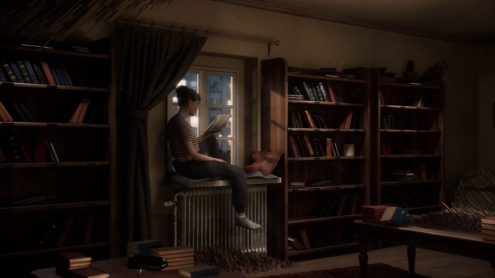
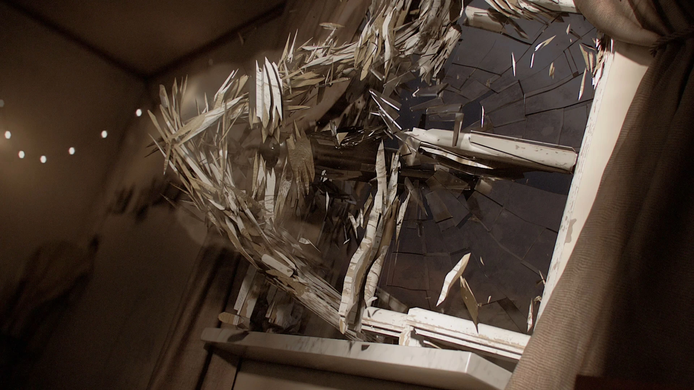
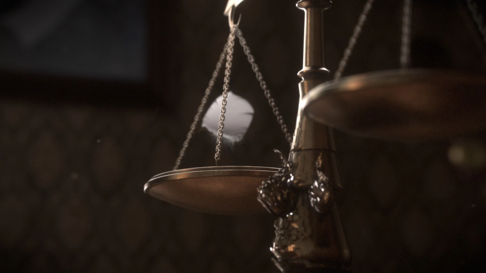
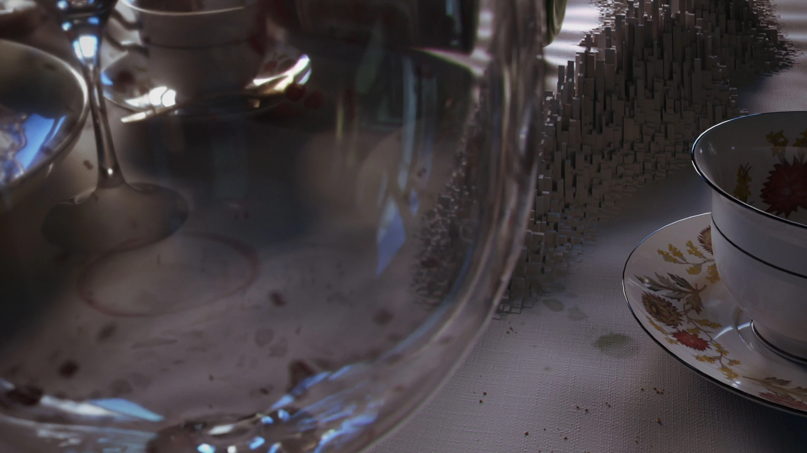
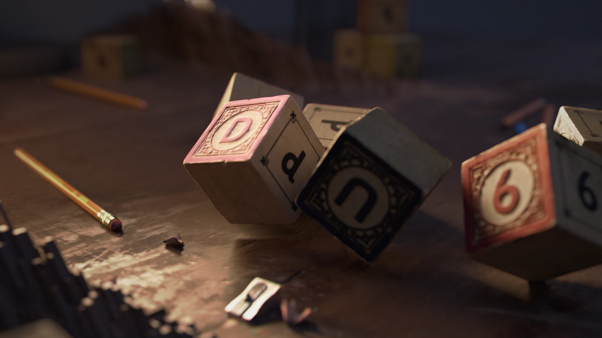
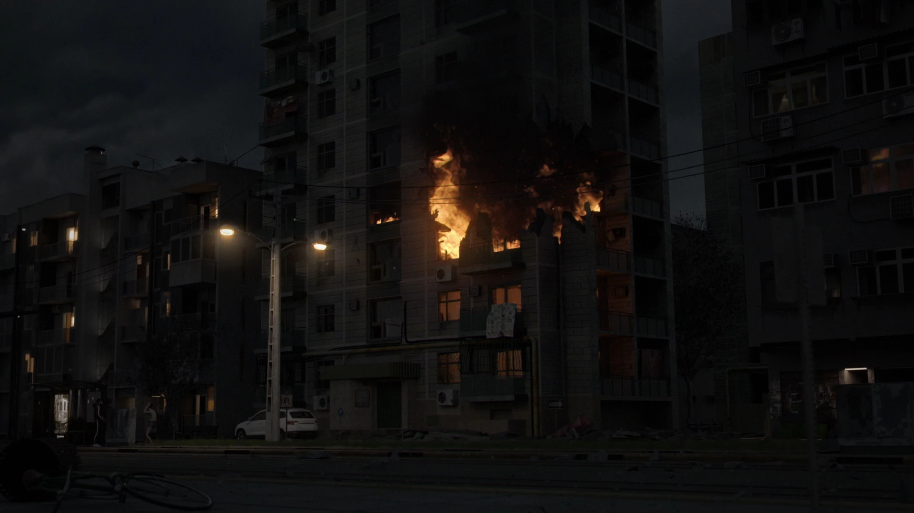

Displacement · Destruction · Storytelling

Project description
Echoes explores realistic everyday scenarios gradually disrupted by an effect distorting the surrounding environment — a symbol of the destruction caused by war. Each scenario represents an essential aspect of human life that is lost in conflict: education, community, art, and safety.
In the film's final moments, the distortion is revealed as the foreshadowing of a missile heading for a civilian building, and the last shot captures the full extent of the devastation.





Behind the scenes
The project began with storyboarding to synchronise the narrative with the emotional rhythm of everyday life being disrupted. Effects were developed in Houdini, rendered in Houdini's rendering systems, graded in DaVinci Resolve, and composited in Nuke.
Besides handling three shots, I built a Houdini Digital Asset that gave the whole film one consistent displacement effect, intensifying as the video progresses. It starts from a user-controlled 0–1 gradient along a curve, and lets artists set direction, rotation, speed and falloffs — with live guides, so changes preview without recomputing the full effect.
Making of
A full walkthrough — environments, VFX, rendering, compositing, and the combined effort of the entire team.
Takeaways
Skills developed and deepened over the four months of production.